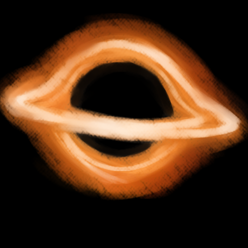

That glowing ring spiraling around the compact object is the accretion disk, made up of gas and debris. A little further past the accretion disk lies the event horizion, the boundary beyond which no object can ever return. The singularity, that black region, is where matter gets crushed into zero volume, a point of infinite density. The physics that dictate the universe fall apart here.